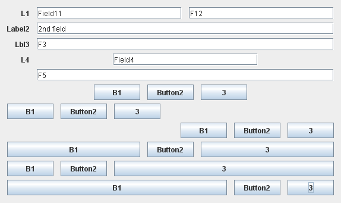
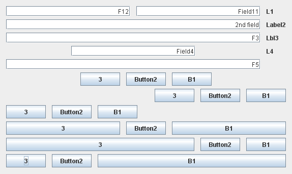

General
Project Documentation

Using DesignGridLayout is quite straitghtforward once you have understood its basic principles.
Moreover, thanks to its fluent API, there is no room for errors at runtime, as compared to other LayoutManager s that require to add components to the Container along with hard to read codes, hard-coded as Strings.
Contrarily to almost every other LayoutManager , DesignGridLayout does not allow you to directly add components to a container; instead, adding components can only be performed, safely, through DesignGridLayout API itself.
For example, for a usual LayoutManager, you may do:
public class MyPanel extends JPanel {
public MyPanel() {
setLayout(new BorderLayout());
add(new JLabel("Hello"), BorderLayout.NORTH);
}
}
But with DesignGridLayout:
public class MyPanel extends JPanel {
public MyPanel() {
DesignGridLayout layout = new DesignGridLayout(this);
layout.row().grid().add(new JLabel("Hello"));
}
}
In this very simple example, you can see that layout is the principal object to be used for adding components to the container.
For every row of components you want created in a container, you need to call layout.row() (or one of the alternatives to row() , explained later). This returns an object (a "row") which provides its own API to add components to this row.
Rows are created vertically from top to bottom, in the same order as lines of codes that call layout.row() . Inside one row, you add components from left to right in the same order calls to add() appear in each row.
Hence this allows you to "visualize" the container layout just by viewing the source code:
DesignGridLayout layout = new DesignGridLayout(this);
layout.row().grid(new JLabel("First name")).add(new JTextField());
layout.row().grid(new JLabel("Last name")).add(new JTextField());
The snippet above creates 2 rows, each with a label and a text field.
Moreover, this allows inserting a new row without any hassle (try to imagine the following snippet with GridBagLayout...):
DesignGridLayout layout = new DesignGridLayout(this);
layout.row().grid(new JLabel("First name")).add(new JTextField());
layout.row().grid(new JLabel("Middle initial")).add(new JTextField());
layout.row().grid(new JLabel("Last name")).add(new JTextField());
DesignGridLayout always takes care of the correct spacing between components inside the container, without requiring you to specify any value. In addition, all components inside a row are automatically "baseline-aligned".
After the first steps, this section gives more details and explanations on DesignGridLayout API through simple examples. The source for all examples is available in DesignGridLayout test sources archive .
Although not mandatory, it is advised to first read the DesignGridLayout Introduction .
First, we demonstrate 3 equivalent ways to add components to a row. Please note the first way is not recommended (it is shown for the sake of exhaustiveness). Using the second or third way is a matter of personal taste; some developers prefer method chaining because it helps better visualizing the layout in the code, while other developers prefer to call add() once with all the components in the row, to save some typing.
package net.java.dev.designgridlayout;
import javax.swing.*;
public class Example1a
{
public static void main(String[] args)
{
JFrame frame = new JFrame("Example 1a");
frame.setDefaultCloseOperation(JFrame.EXIT_ON_CLOSE);
JPanel top = new JPanel();
DesignGridLayout layout = new DesignGridLayout(top);
// You can add components one line at a time (not advised)
IRow row = layout.row().grid();
row.add(button());
row.add(button());
// Or using method chaining
layout.row().grid().add(button()).add(button());
// Or, even better, using variable arguments
layout.row().grid().add(button(), button());
frame.add(top);
frame.pack();
frame.setVisible(true);
}
public static JButton button()
{
return new JButton("Button");
}
}

Then, we'll build a simple form based on the 4 column canonical grid shown below:

Example 1b reflects the design above.
layout.row().grid().add(button()).add(button()); layout.row().grid().add(button()).add(button()).add(button()); layout.row().grid().add(button(), 2).add(button()); layout.row().grid().add(button()).add(button()).add(button()).empty();

Some cool things to note:
Most forms have labels for each row. So let's add some for Example 1c.
layout.row().grid(new JLabel("Row 1")).add(button().add(button());
layout.row().grid(new JLabel("Row 2")).add(button().add(button().add(button());
layout.row().grid(new JLabel("Row 3")).add(button(), 2).add( button());
layout.row().grid(new JLabel("Row 4")).add(button()).add(button()).add(button()).empty());
In Example 1c above, labels do not get resized if the window is resized, only components from grid columns get resized on such event.
Another common exception to the canonical grid are the "Cancel" and "OK" buttons found in dialog boxes. DesignGridLayout allows you to create rows with either grid, left, right, or center alignment per row. We'll also add a blank row with some additional height, to add space before the "Cancel" and "OK" buttons.
layout.emptyRow();
layout.row().right().add(new JButton("Cancel")).add(new JButton("OK"));
DesignGridLayout also allows you to design large forms that contain several groups of components, each with its own dedicated label column.
Here is a snippet that implements the example of sub-grids found in this page on canonical grids :
layout.row().grid(label("Label 1:")).add(button(), button())
.grid(label("Long Label 1:")).add(button(), button());
layout.row().grid(label("Lbl 2:")) .add(button(), button(), button())
.grid() .add(button(), button());
layout.row().grid(label("Label 3:")).add(button(), 2).add(button())
.grid(label("Label 3+:")) .add(button(), 2).add(button());
layout.row().grid(label("Lbl 4:")) .add(button());
DesignGridLayout transparently supports right-to-left languages (such as Arabic or Hebrew) depending on the current default Locale used by the application. You don't need any special action on your layout code for it to work: this comes for free!
The following screenshots demonstrate the same dialog (with exactly the same layout code, excerpted hereafter) one using the "usual" left-to-right text orientation, the other using right-to-left.
Sample dialog with left-to-right orientation
Same dialog with right-to-left orientation
Note that there are several ways in Swing to change text orientation in dialogs:
Also note that changing a Locale works only if it has been installed in your JRE (which depends on the way you have installed your JRE).
This section has covered the main features of DesignGridLayout. A few other features exist but are not yet presented here. You may want to consult the API javadoc which contains the official reference for DesignGridLayout.
Now you are ready to use DesignGridLayout in your own programs!